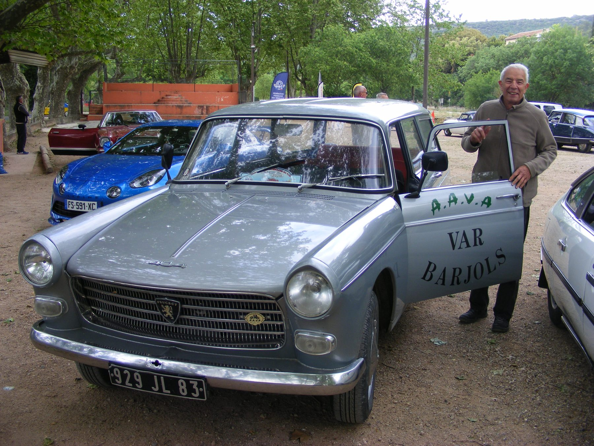

Qui sommes-nous ?
L’Amicale des Amateurs de Véhicules Anciens, affiliée à la F.F.V.E n° 282.
Notre histoire
L’association a été créée en 1988 par Michel Velasquez.
Le bureau
- Président : Alain Tornato
- Vice-président : Michel Velasquez
- 8 membres du conseil
L’amicale en chiffres
- 35membres
- 75voitures
